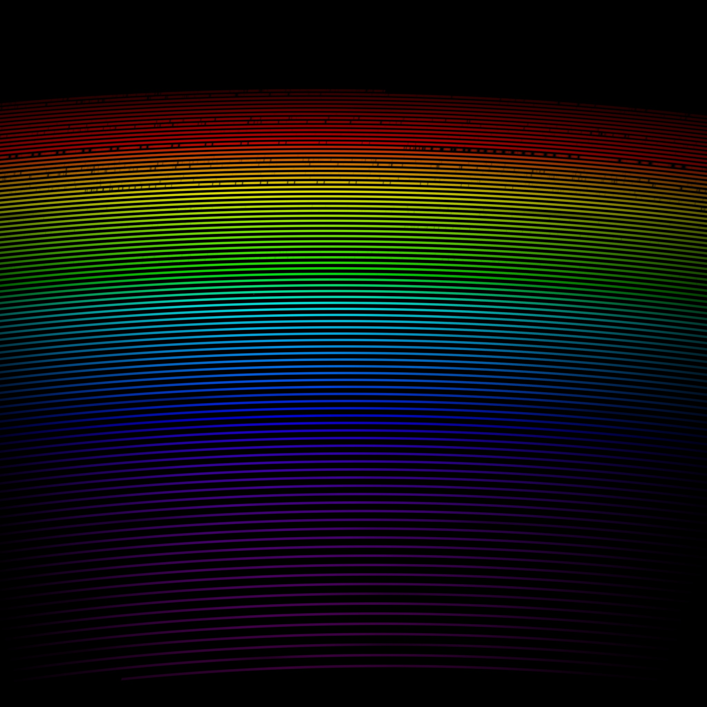

How The Project Is Organized
Five plain-Python files cover the whole pipeline, from GUI to physics engine to this website. Data flow: night_planner.py (build a night) → run_night.py (walk the sequence) → simulate_detector.py (one physics run per exposure) → FITS/PNG/JPG frames in night_output/.
- night_planner.py — GUI entry point. Builds a night's observing sequence (calibrations + science targets), enriches targets via SIMBAD/Gaia DR3, and launches the runner.
- run_night.py — batch execution engine. Walks the planned sequence exposure by exposure, calls the physics engine for each one, and shows live progress.
- simulate_detector.py — the physics core. Turns a 1D spectrum into a 2D detector image via the PSF / trace-geometry / spline pipeline described below; also runnable standalone from the command line.
- simulate_params.yaml — central configuration for a single simulate_detector.py run: telescope, target, spectrum model, sky, telluric absorption, fiber setup.
- make_webpage_assets.py — builds this website: copies preview images, computes the stats below, and regenerates the mini-lecture figures.
- assets/ — bundled and auto-fetched data (Zemax optical design, TAPAS telluric transmission, throughput curves, cached spectral models). See “Where The Data Comes From” below.
Local Installation
Clone the repository, create an isolated virtual environment so these dependencies don't collide with anything else on your system, activate it, then install the required packages. Everything else (Zemax optical data, telluric transmission) is bundled in the repo as compressed archives and auto-extracts on first run — no separate download step. Runs entirely locally with plain Python; no web backend required.
Daily Workflow (In Practice)
The planner drives the observing sequence and launches the runner. This is the only command you normally need day-to-day.
Planner GUI

night_planner.py's main window. Build the night's sequence with +Calibration/+Science/+Slew/+Delay, reorder or delete steps, then Recompute BERV+AM before hitting Run Night. Each row tracks its own RA/Dec, systemic RV, BERV, airmass, fiber routing, and status live as run_night.py executes it; Export YAML saves the sequence to replay later.
Detector Preview

PNG preview is true 2x2 binned and scaled to 0..2xP90.
Perceptual-Color Preview

Hue = wavelength (blue → red, following the eye's spectral response). Brightness = sqrt(flux), so faint orders stay visible next to bright ones.
Simulation Summary
Methods
Auto-extracted from simulate_params.yaml during asset generation.
Mini Lecture: How A 1D Spectrum Becomes A 2D Detector Image
This simulator does not draw arbitrary lines on an image. It starts with optical design products from Zemax, then propagates a calibrated spectrum through trace geometry and PSF deposition so every detector pixel receives physically motivated photon counts.
The four figures below are generated automatically from your local data and are meant to be read in order. They illustrate the exact sequence used in the code path.
Step 1. Build Detector-Scale PSFs
Input: Zemax PSF stamp (80x80 at 3 um sampling). Operation: true block binning to detector sampling (20x20 at 12 um), with flux conservation. Output: detector-scale PSF kernels ready for sub-pixel placement.

Step 2. Trace Geometry From XY Maps
Input: per-order wavelength-position map from the Zemax XY table. Operation: convert mm to detector pixels and construct order centerlines. Output: wavelength-tagged trajectories for each order on detector coordinates.

Step 3. Spline Interpolation Along The Trace
Input: sparse optical-design samples. Operation: fit cubic splines x(lambda) and y(lambda), then sample at the simulation wavelength step. Output: smooth wavelength to sub-pixel detector mapping.

Step 4. Photon-Conserving 2D Stamp Accumulation
Input: sampled spectral flux, interpolated coordinates, and detector-scale PSF kernels. Operation: shift and add PSF stamps at each wavelength coordinate. Output: final detector frame in photons per pixel.

Transmission Snapshot
Where The Data Comes From
Everything below is fetched or bundled automatically — no manual downloads needed to run the simulator.
- Zemax optical design (PSF stamps + order XY maps): bundled in the repo as compressed archives, auto-extracted on first run.
- BT-Settl CIFIST synthetic spectra: nearest grid point to the requested Teff/logg fetched live from the SVO theoretical spectra service and cached locally.
- TAPAS telluric transmission (per-species H2O/CO2/CH4/O2/O3/N2O/NO2): bundled compressed FITS, auto-extracted on first run.
- Gaia DR3 / SIMBAD: queried live for target astrometry, parallax, and photometry during night planning.
- Sky OH airglow & arc lamp lines: fetched from ExoMol MoLLIST-OH and NIST ASD, then cached as local line lists.
Key Features
- Science fiber routing with simultaneous sky in both fibers.
- Wavelength-dependent throughput and adaptive spectral sampling.
- SIMBAD plus Gaia DR3 target enrichment with per-target overrides.
- Planner-to-runner pipeline with status-aware execution.